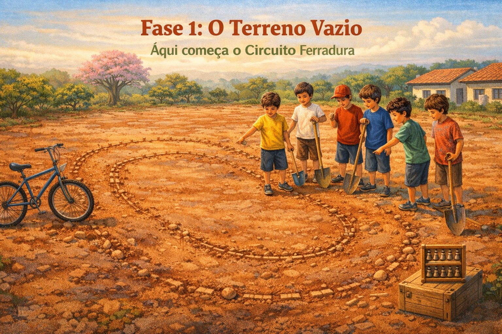

Palotina, 1983. Antes de construir a pista, o terreno precisava ser limpo. No código: antes de calcular, precisa-se declarar.

Nesta primeira fase, você vai limpar o terreno mental e construir os alicerces da programação. Assim como o ábaco romano precisa de todas as contas no chão antes de começar a calcular, o programador precisa entender variáveis antes de escrever qualquer algoritmo.
if / elif / else)for e whileRanhuraAbaco (o coração do ábaco)CircuitoFerradura completaO ábaco romano (século II–V d.C.) usa o sistema bi-quinário: cada ranhura tem 1 conta superior (vale 5) e 4 contas inferiores (valem 1 cada). Máximo por ranhura: 9. Com 5 ranhuras: 0 a 99.999.
Cada ranhura é uma curva da pista de Palotina. As contas inferiores são as pedaladas terrestres (esforço do piloto). A conta superior é a rampa — quando você a ativa, o valor salta de 1 para 5, assim como o salto da Paineira multiplica a velocidade instantaneamente.
No ábaco, zerar uma ranhura é como declarar uma variável sem valor. Armar um número é atribuir. Ler o total é imprimir.
No ábaco, a conta superior só ativa quando o dÃgito atinge 5 ou mais. Isso é uma condicional: "se o valor ≥ 5, ativa a conta celeste".
Para percorrer todas as ranhuras do ábaco, usamos loops. Cada iteração é uma pedalada — você passa por todos os pontos-chave da pista.
Marque cada item ao concluir:
Implemente a classe CircuitoFerradura completa com:
contornar_paineira(), somar(), subtrair(),
zerar(), estado_ranhuras() e display ASCII colorido no terminal.
Baixe o CircuitoFerradura.exe como referência de comportamento esperado.